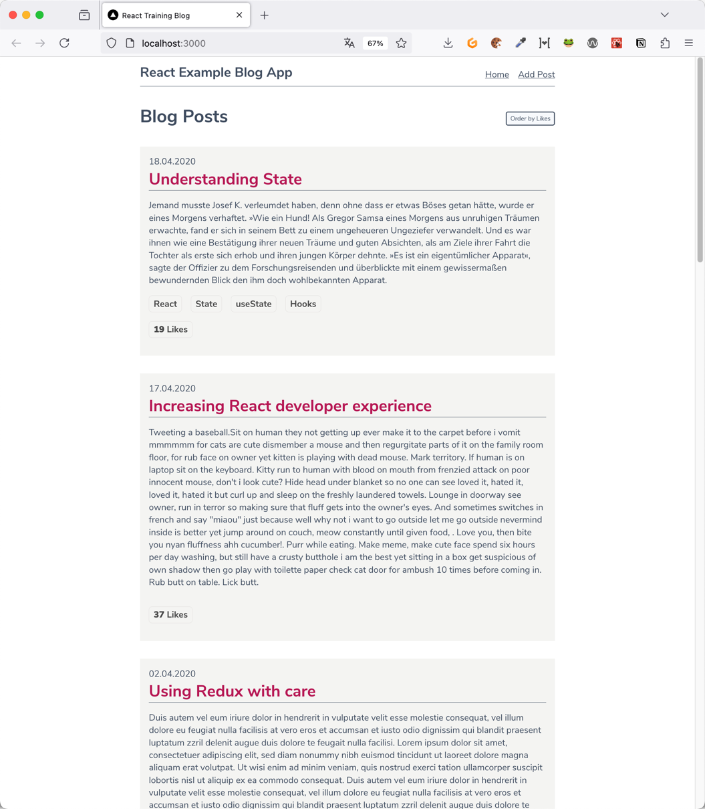
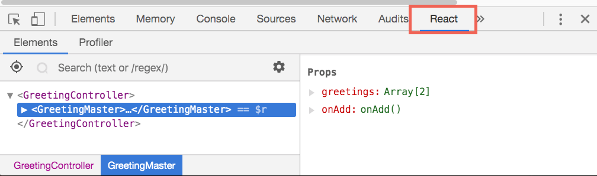
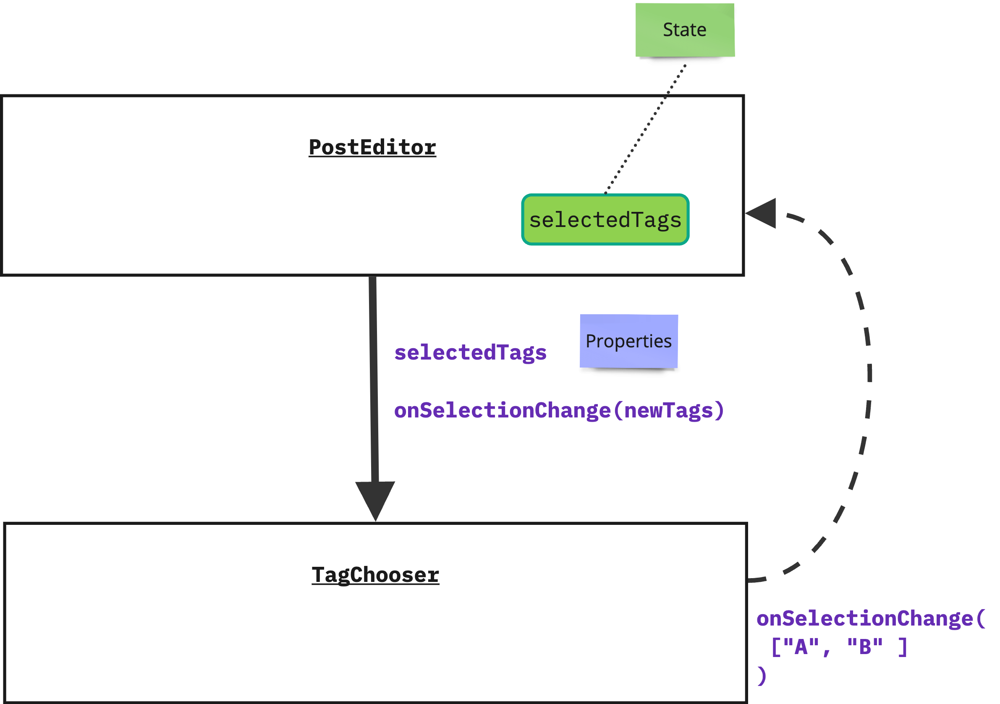

React Einführung
Nils Hartmann | @nilshartmann
Slides
Lokal: 2024-09-16-react-einstieg
Remote: https://nilshartmann.github.io/react18-workshop/2024-09-16-react-einstieg
Nils Hartmann
https://nilshartmann.net / @nilshartmann
Freiberuflicher Software-Entwickler, Berater und Trainer aus Hamburg
Java | JavaScript, TypeScript | React | GraphQL


Teil 1
React
Beispiel-Anwendung
Dokumentation
- Dokumentation https://react.dev/
Unsere erste React-Komponente
- Sehen wir uns die wichtigsten Konzepte einer React-Komponente im Code an
- Ihr könnt mir zugucken, Übungen machen wir danach
- Schritt-für-Schritt (
react-intro/workspace)
Hello World React
PostEditor.js
import React from "react";
export default function PostEditor() {
const [title, setTitle] = React.useState("");
return (
<div>
<label>
Title
<input onChange={event => setTitle(event.target.value)} value={title} />
</label>
</div>
);
}
Einbinden der Anwendung in die HTML-Seite
index.html
<html>
<-- ... -->
<body>
</body>
</html>
index.tsx
import React from 'react';
import { createRoot } from 'react-dom/client';
import PostEditor from './PostEditor';
const root = createRoot(document.getElementById('root')!);
root.render(<PostEditor />);
Im Workspace ist die Root-Komponente die App-Komponente
Der Trainingsworkspace
-
2024-09-16-react-einstieg.html: Die Slides -
Der Code ist im
react-introVerzeichnis -
react-intro/workspace: Verzeichnis für Eure Übungen
👉 Empfehlung: nur diesen Ordner in IDE/Editor öffnen -
react-intro/steps: Fertiger Source-Code nach jeder Übung
Übung #1: Hello-World
Mit Tools, Workspace und React vertraut machen
Schritt #1: Tool Chain starten
Gemeinsam, Schritt-für-Schritt:
- Verzeichnis
react-intro/workspaceim Editor öffnen -
cd react-intro/workspace -
npm install -
npm run dev - Der Browser sollte automatisch http://localhost:3000 öffnen
- Wenn Du "Hello, World" im Browser siehst, ist alles gut!
- Dann bitte in Teams "Hand heben" 🙋♀️
Schritt #2: Deine erste React-Komponente
Ein kleiner Schritt für die PostEditor-Komponente, ein großer Schritt für dich auf deinem Weg, React zu lernen!
- Ersetze den "statischen" Code in
PostEditor.tsx - Die Komponente soll PostEditor heißen
-
Sie sollte einen Zustand/State (
title) und ein Eingabefeld dafür haben - Als Hilfe kannst Du den Code aus den vorherigen Slides ansehen.
-
Eine mögliche Lösung findest Du auch in
react-intro/steps/02_hello_world_editor - Wenn Du fertig bist, bitte "Hand heben" in Teams 🙋♀️
Teil II
React Komponenten und Hooks API
React: JSX
-
Wird wie HTML hingeschrieben, inkl Attribute:
<div><input type="text"/></div> -
Achtung!
class-Attribut heißtclassName:<h1 className="title">...</h1> -
Attribute, die keine Strings sind, müssen in {} eingeschlossen werden:
<Counter label="Count" count={7} showValues={true} /> -
CSS-Eigenschaften werden als Objekt übergeben in Camel-Case-Notation:
const styles = { marginLeft: '10px', border: '1px solid red' }; <h1 style={styles}>...</h1>
React: JSX #2
-
Fragmente (rendern selber kein Element in den DOM, nur ihre Kind-Elemente):
function Choice() { return <> <li>Yes</li> <li>No</li> </> } -
null oder boolean (false oder true), um nichts zu rendern:
function ErrorMessage() { const hasError = someCondition(); // returns true or false return{hasError && "Error!"} {hasError || "Everything fine"}} -
Kommentare
function MyComponent() { return{ /* hier ist javascript, deswegen block-kommentare erlaubt */ }; }
Zustand einer Komponente und der useState-Hook (Zusammenfassung)
- Beispiel: Inhalt eines Eingabefelds, Daten vom Server, Menu offen oder zu
- Werte üblicherweise immutable
- Arbeiten mit Zustand über useState-Hook
- useState liefert Array mit zwei Werten zurück: aktuellen Zustand, und setter-Funktion um Zustand zu verändern
-
function HelloWorld() { const [title, setTitle] = React.useState(""); return <input onChange={e => setTitle(e.target.value) value={title} />; } - Aufruf des Setters löst erneutes rendern der gesamten Komponente aus
- Es können mehrere States erzeugt werden, durch Verwendung mehrerer useState-Aufrufe
- Zustand ist eines der zentralen Konzepte von React
React Hooks API
Mit der React Hooks API kann sich eine Komponente in Zustand und Lebenszyklus "einhaken"-
Hooks sind "normale" Funktionen, müssen aber mit
usebeginnen (useState, useEffect, ...)
React Hooks API
Bei der Verwendung von Hooks gibt es einige Regeln ("Rules of Hooks") zu beachten ️👮♀️(https://react.dev/reference/rules/rules-of-hooks)
Einschränkungen:
- Hooks können nur in Funktionskomponenten (und anderen Hooks) aufgerufen werden
-
Hooks müssen immer in derselben Reihenfolge und auf Top-Level-Ebene verwendet werden
- Verboten z.B. in Schleifen, if-Abfragen oder in anderen Funktionen
- Es gibt ein ESLint Plug-in zur korrekten Verwendung der Hooks
-
Der Hooks-Mechanismus basiert intern darauf, dass React sich die Reihenfolge der
useXyz-Aufrufe merkt!
React Hooks
Beispiele für korrekte und unerlaubte Verwendung
// ERLAUBT:
function HelloWorld() {
const [greeting, setGreeting] = React.useState("");
const [name, setName] = React.useState("");
// ...
}
// ERLAUBT:
function HelloWorld() {
const [greeting, setGreeting] = React.useState("");
const uppercaseGreeting = greeting.toUpperCase();
const [name, setName] = React.useState("");
// ...
}
// VERBOTEN:
function HelloWorld() {
const [title, setTitle] = React.useState("");
function onSaveClick() {
const [loading, setIsLoading] = React.useState(true);
// ...
}
// ...
}
Übung: Post-Editor für unsere Anwendung
Erweitere deine Komponente um neue FeaturesSchritte
-
Zusätzlich zum "title", sollte es einen weiteren Zustand und eine Textarea geben:
body. Eintextarea-Element hat dieselbe API wie eininput-Feld, du kannst also auch hier mitonChangeundvaluearbeiten. -
Füge einen "Clear"-Button hinzu, der beide Eingabefeld leert. Das Property auf dem
Button ist
onClick. - Der "Clear"-Button soll disabled sein, wenn beide Eingabefelder leer sind
- Optional: füge unter beiden Feldern eine Fehler-Meldung hinzu, wenn das jeweilige Feld leer ist (z.B. "Please fill in Xyz")
- Mögliche Lösung:
steps/03_post_editor - Wenn Du fertig bist, bitte "Hand heben" in Zoom 🙋♀️
TypeScript
Einführung: Die Sprache TypeScript
TypeScript is a superset of JavaScript that compiles to plain JavaScript ( http://www.typescriptlang.org/)
- Erweitert JavaScript um ein Typen System
- Jeder gültige JavaScript Code ist auch gültiger TypeScript Code
- Mittels des TypeScript Compilers wird aus TS Code JavaScript Code
TypeScript Grundlagen
Typ-Angaben werden hinter einen Bezeichner geschrieben
// Variablen können Typ-Informationen bekommen
let foo: string;
foo = 'yo';
// Error: number: This type is incompatible with string
foo = 10;
// Funktionen
function sayIt(what: string): string {
return `Saying: ${what}`;
}
sayIt('Klaus'); // ok
sayIt(10); // error
// Arrow Funktionen
const sayIt = (what: string): string => `Saying: ${what}`;
sayIt('Moin');
sayIt(123); // Error: Argument of type '123' is not assignable
// to parameter of type 'string'.
Eingebaute Typen
// string
let city: string = 'Hamburg';
// boolean
let isDone: boolean = false;
// number
let theAnswer: number = 42;
// array (note the [])
let cities: string[] = ['Hamburg', 'Barcelona'];
// alternative:
let languages: Array<string> = ['JavaScript', 'TypeScript'];
// void
function log(s: string): void { /* ... */ }
Eingebaute Typen: any und unknown
// any: kann alle Typen aufnehmen, Typ-Prüfung ist ausgeschaltet
let theUnknown: any = 'Who cares';
theUnknown = 666; // ok
theUnknown = true; // ok
let a: number = theUnknown; // ok
function loadData(): any { return "" // ok }
let b:number = loadData(); // ok
Eingebaute Typen: any und unknown
// unknown: kann ebefalls alle Typen aufnehmen, erzwingt aber vor der Verwendung Typ-Prüfung
function loadData(): unknown { return "" // ok }
let b = loadData();
b.toUpperCase(); // ERROR
if (typeof b === "string") {
// b ist jetzt string (typeof ist Laufzeitprüfung!)
b.toUpperCase(); // OK
}
Typen können abgeleitet (inferred) werden
let city = 'Hamburg'; // city ist ein String
city = 42;
// Fehler: [ts] Type '42' is not assignable to type 'string'.
// Explizite Angabe eines Types (parameter)
// und abgeleiteter Typ (Return Type der Funktion)
function sayIt(what: string) {
return `Saying: ${what}`;
}
const said: string = sayIt('Hello TypeScript'); // ok
const saidItWrong: number = sayIt('Hello TypeScript'); // error!
Type Check ausschalten
Mit @ts-ignore (als Kommentar) kann wird die Überprüfung der nächsten Zeile
ausgeschaltet:
let city:string = "Hamburg";
city = 20259; // error: [ts] Type '20259' is not assignable to type 'string'.
// @ts-ignore
city = 20259; // ok
Nützlich in corner cases, die nur schwer mit TypeScript abbildbar sind oder bei Migration
null und undefined
null muss explizit zugelassen werden (strictNullChecks):
let city:string = null; //Type 'null' is not assignable to type 'string'.
let optionalCity:string|null = null; // OK
undefined muss ebenfalls explizit zugelassen werden:
let city:string = undefined; //Type 'undefined' is not assignable to type 'string'.
let optionalCity:string|undefined = undefined; // OK
let optionalCity:string|undefined|null = null; // OK
Optionale Parameter können mit ? gekennzeichnet werden (erlauben dann auch
undefined)
function greet(name: string, greeting?: string) {
console.log(`${greeting || 'Hello'}, {name}`);
}
greet('Susi', 'Moin')// Moin, Susi
// 2. Parameter ist optional:
greet('Klaus'); // Hello, Klaus
greet('Peter', null); // Argument of type 'null' is not assignable
// to parameter of type 'string | undefined'.
Eigene Typen
Mit interface und typekönnen eigene Typen (Objekt-Strukturen)
definiert werden:
// Komplexer Typ
interface Person {
name: string; // Pflicht
livesIn?: string; // Optional
}
// Alternativ (interface und type fast synonym)
type Person = { name: string; livesIn?: string; }
const susi: Person = { // OK
name: 'Klaus',
livesIn: 'Hamburg'
};
const klaus: Person = { // OK (livesIn ist optional)
name: 'Klaus'
}
const helmut: Person = {} // Error: Property 'name' is missing
const lukas: Person = {
name: 'Lukas',
profession: 'Lokführer'
} // Error: 'profession' does not exist in type 'Person'.
Eigene Typen II
Eigene Objekt-Typen können sowohl "Attribute" als auch Funktionen enthalten:
// Komplexer Typ
type Person {
name: string; // Pflicht
greet(greeting: string): string;
}
const p:Person = {
name: "Klaus",
greet(greeting: string) {
return `${greeting}, ${this.name}`
}
}
p.greet("Hello"); // OK
p.greet(123); // ERR: Argument of type '123' is not
// assignable to parameter of type 'string'.
const wrong:Person = {
name: "Susi", // OK
greet(greeting: number) { return "hello" }
// ERR: Type '(greeting: number) => string' is not assignable to
// type '(greeting: string) => string'.
// Types of parameters 'greeting' and 'greeting' are incompatible.
// Type 'string' is not assignable to type 'number'.
}
Union Types
Variablen, Parameter etc. können mehr als einen Typ annehmen:
type Person = { name: string };
type Movie = { title: string };
function printNameOrTitle(obj: Person | Movie) {
console.log(obj.title); // ERR: Property 'title' does not
// exist on type 'Person | Movie'
if ("title" in obj) { // Abfrage ist ein "Type Guard"
// obj ist Movie hier, title ist definiert
console.log(obj.title);
} else {
// obj ist Person hier: name ist definiert
console.log(obj.name);
}
}
printNameOrTitle({name: "Klaus"}); //OK
printNameOrTitle({title: "Pulp Fiction"}); //OK
printNameOrTitle({label: "Save"}); // ERR
Type Guards
Durch einen Type Guard können Typen "eingeengt" werden
type Person = { name: string };
type Movie = { title: string };
// Wenn diese Funktion true zurueckgibt, nimmt Typescript an,
// dass das übergebene Argument vom Typ Movie ist
function isMovie(candidate: any): candidate is Movie {
return ("title" in candidate);
}
function printNameOrTitle(obj: Person | Movie) {
if (isMovie(obj)) {
// movie
}
}
Type Assertions
type Person = { name: string };
type Movie = { title: string };
// Wenn diese Funktion zurueckkehrt (kein Error geworfen wird) nimmt Typescript an,
// dass das übergebene Argument vom Typ Movie ist
function assertIsMovie(candidate: any): asserts candidate is Movie {
if ("title" in candidate) {
return;
}
throw new Error("Candidate is not a movie!")
}
function printTitle(hopefullyAMovie: any) {
assertPersonIsMovie(hopefullyAMovie)
// hopefullyAMovie ist jetzt Movie
hopefullyAMovie.title; // OK
}
String Literal Types
Beispiel: String Aufzählungstyp
// Beispiel:
type View = "POST_LIST" | "POST_EDITOR";
const s:View = "POST_LIST"; // OK
const t:View = "POST_LISTE" // FEHLER
function setView(v: VIEW) {
if (v === "POST_LIST") { ... } // ok
if (v === "POST_LISTE") { ... } // error: immer false
}
setView("POST_LIST"); //OK
setView("POST_LISTE"); // ERROR
Typ-sicherheit in useState
- Der Typ von useState wird grundsätzlich von TypeScript automatisch abgeleitet
-
function PostEdior() { const [title, setTitle] = React.useState(""); // greeting is string, because initial value is a string setGreeting("huhu"); // OK setGreeting(666); // ERROR (wrong Type) setGreeting(null); // ERROR (wrong Type) console.log(title.toUpperCase()); // OK } - Du kannst alternativ den Typen auch explizit setzen
- Das ist in einigen Fällen sogar erforderlich:
-
- Wenn du mehr als einen Typen angeben willst, z.B. null oder string
- Wenn du eine Liste oder ein Objekt im Zustand hast, dessen Typ TypeScript nicht ermitteln kann
-
function App() { const [error, setError] = React.useState<null|string>(null); const [greetings, setGreetings] = React.useState<string[]>([]); const [address, setAddress] = React.useState<Address|undefined>(); // ... }
Übung: Hello, TypeScript!
Mach dich mit den Grundzügen der Sprache TypeScript vertraut
- Diese Übung machen wir im TypeScript Playground!
- Öffne dazu den TypeScript Playground im Browser: https://www.typescriptlang.org/play/
-
Kopiere den Inhalt der Datei
material/ts-intro/uebung.tsin den Playground-Editor - Darin enthalten sind zahlreiche Compile-Fehler 😱
- Bitte ergänze die fehlenden Typ-Angaben, Hinweise und Todos findest du in der Datei
- Mögliche Lösung:
material/ts-intro/uebung_loesung.ts
React: Properties
Live: Die TagChooser-Komponente einbinden
-
Mit Properties können einer Komponente von außen Werte und Eigenschaften
übergeben werden
function PostEditor() { // type, onChange und value sind Properties! return ( <input type="text" onChange={() => setTitle("...")} value={title}</h1> ); } } - Properties können innerhalb der Komponente nicht verändert werden
- Zum Vergleich: Zustand (State) ist eine innere Eigenschaft der Komponente (die verändert werden kann)
Properties ("Props") einer Komponente
- Komponenten können beliebig eigene Properties definieren
-
Bei der Angabe der Properties bei der Verwendung einer Komponente werden die
Properties wie von HTML gewohnt in der Notiation
name=valuehingeschrieben -
<TagChooser title="Select tags for your post" availableTags={["JS", "Web Development" ]} /> - ...alle angegebenen Properties werden von React "gesammelt" und in einem Objekt an die Komponente übergeben
- Das Objekt ist immer das erste Funktionsargument einer Komponente
-
function TagChooser(props) { // props: // { // title: "Select tags for your post", // availableTags: ["JS", "Web Development" ] // } return ...; } -
// Mit Destructuring function PostEditor( {title, availableTags} ) { return ...; }
Properties: Default-Werte
Mit dem Object Destructuring-Operator können Default-Werte angegeben werden, für Eigenschaften, die aus einem Objekt gelesen werden, aber dort nicht angegeben (bzw. undefined) sind:
Für den Aufrufer sind die Properties dann optional, innerhalb der Komponente weiß TypeScript aber, dass ein Wert vorhanden ist (und kennt auch dessen Typ)
function TagChooser({title = "Select Tag", availableTags}: TagChooserProps) {
// 'title' ist hier in jedem Fall vom Typ 'string', auch wenn
// das vom Aufrufer nicht gesetzt wird
// ...
}
// title in der Komponente ist "Select Tag"
<TagChooser availableTags={["JS", "React"]} />
Übung: Ein TagChooser
Schritt 1 für den TagChooser: Darstellung der "available" TagsSchritte
- In
TagChooser.tsxgibt es bereits eine TagChooser-Komponente. - Diese Komponente musst du um Properties erweitern
- Außerdem musst du darin die übergebenen (
availableTags) anzeigen - Du findest dazu Hinweise direkt in der Datei.
- Mögliche Lösung:
steps/05_props - Wenn Du fertig bist, bitte "Hand heben" in Teams 🙋♀️
Hintergrund: Virtual DOM
"Rendern" hat leider doppelte Bedeutung!

React Devtools
React Developer Tools für Chrome und FirefoxUntersuchen der React Anwendung zur Laufzeit

Datenfluss in React-Anwendungen
In React erfolgt der Datenfluss zwischen Komponenten immer von oben nach unten:
- Eine Parent-Komponente hat Zustand (State) und ggf. Logik, um mit dem Zustand zu arbeiten
- Die Parent-Komponente reicht Daten per Properties an ihre Kind-Komponenten weiter (z.B. Daten aus dem Zustand)
- Außerdem gibt die Parent-Komponente Callback-Funktionen als Properties an ihre Kind-Komponenten (als eine Art Event-Handler)
- Bei einem Ereignis (zum Beispiel neues Tag ausgewählt) ruft die Kind-Komponente die Callback-Funktion der Parent-Komponente auf
- In der Callback-Funktion findet dann die fachliche Verarbeitung des Events statt. Dabei kann die Parent-Komponente zum Beispiel ihren State aktualisieren
- Das Ändern des States triggert das erneute Rendern der Komponenten-Hierarchie, so dass sowohl Parent- als auch Kind-Komponente ihre Darstellung gemäß den aktualisierten Daten anzeigen können
-
Dieses Verhalten haben wir bei der eingebauten
input-Komponente bereits gesehen. (valueundonChange-Property) - 👉 Durch das pauschale neurendern auch aller Kind-Komponenten kann es nicht zu Inkonsistenzen in der Darstellung durch "vergessenes" Rendern kommen.
Komponenten-Hierarchie mit Properties und Callback-Funktionen
Übung: Mache den TagChooser zu einer "kontrollierten" Komponente
Der PostEditor soll die Liste der ausgewählten Tags verwalten
-
In
react-intro/material/06_hierarchienfindest du eineTagChooser.tsx-Datei - In dieser Datei findest du eine Beschreibung der erforderlichen Schritte
- Du kannst die Änderungen entweder an deinem eigenen TagChooser im Workspace vornehmen...
-
...oder du kopierst dir die
TagChooser.tsx-Datei in einen Workspace als Ausgangsbasis - Mögliche Lösung:
steps/06-hierarchien - Wenn Du fertig bist, bitte in Teams "Hand heben" 🙋♀️
Server-Zugriffe
- React macht keine Angabe, wie Server-Calls (technisch) gemacht werden
-
In der Regel braucht man zwei Dinge:
- Eine (low-level) Bibliothek zum Ausführen der eigentlichen Requests
- Eine (high-level) Bibliothek zum Arbeiten mit den Daten mit erweiterten Features wie Caching und Fehlerbehandlung
-
Häufig in React verwendet: fetch API
- Browser-API zum Ausführen von HTTP Requests
- Dokumentation: Fetch API (MDN)
-
Im Workshop verwenden wir ky
- Kleine Bibliothek, die auf fetch basiert
- Abstraktion für typische Anwendungsfälle macht die Bedienung etwas einfacher
Hintergrund: Promises in JavaScript
Ein Promise liefert einen "Versprechen" auf einen Wert zurück, der evtl. erst in der Zukunft ermittelt werden kann
Damit können wir asynchrones Verhalten in JavaScript Applikation abbilden
// "getNameAsync" ist eine ausgedachte Funktion,
// die ein Promise zurückliefert,
// das "irgendwann" den String "Klaus" zurückgibt
const promise = getNameAsync();
promise.then(name => console.log(name));
// Ausgabe "irgendwann": "Klaus"
Promises
Promises können verkettet werden
// Annahme: 'getNameAsync' liefert "irgendwann" den String "Klaus" zurück
const promise = getNameAsync()
// Wird mit dem ersten Wert aufgerufen und gibt neuen Wert zurück
.then(name => getGreetingAsync(name))
// wird mit dem zweiten Wert (aus vorherigem then) aufgerufen
.then(greeting => console.log(greeting));
// Ausgabe "irgendwann":
// "Hello, Klaus"
Die then-Funktion gibt immer ein Promise zurück
Fehlerbehandlung
Mit catch() kann man Fehler fangen und darauf reagieren
const promise = getNameAsync()
.then(name => { if (name === null) throw new Error("No name found") })
.then(greeting => console.log(greeting));
.catch(error => console.error(`Greeting failed: ${error}`))
// Wenn 'getNameAsync' null zurückliefert ist die Ausgabe:
// Greeting failed: No name found
Finally
Eine finally-Callback-Funktion wird nach dem letzten then bzw.
catch-Block ausgeführt.
Die finally-Funktion wird immer ausgeführt (unabhängig davon, ob vorher ein Fehler aufgetreten ist oder nicht
const promise = getNameAsync();
.then(name => { if (name === null) throw new Error("No name found") })
.then(greeting => console.log(greeting));
.catch(error => console.error(`Greeting failed: ${error}`))
.finally( () => console.log("Goodbye!") );
// Output (error): Greeting failed: No name found
// Output (log): Goodbye!
async / await
"Wrapper" um Promises
Erlaubt es, asynchronen Code "linear" hinzuschreiben
async / await
await wartet bis ein Promise aufgelöst wird
function greet(name) { return new Promise(...); }
// await can only be used in 'async'-functions:
async function sayWhat(name) {
const greeting = await greet(name);
// greeting is a string!
console.log(greeting); // => Hello, ...
}
async / await
async machen eine Funktion zu einer "async function"
Eine async Funktion gibt immer ein Promise zurück
async function greet(name) {
return `Hello, ${name}`;
}
const greeting = greet('Klaus');
// greeting is a Promise!
console.log(greeting instanceof Promise); // => true
console.log(greeting) // => Promise {<resolved>: "Hello, Klaus"}
async Funktion als Fat Arrow Funktionen:
const greet = async (name) => `Hello, ${name}`;
const greeting = greet('Klaus');
// greeting is a promise!
console.log(greeting instanceof Promise); // => true
console.log(greeting) // => Promise {<resolved>: "Hello, Klaus"}
async / await
Anstatt then oder catch-Ketten kannst Du einfach mehrere
await Statements verwenden und try/catch für die Fehlerbehandlung:
// Return promises
async function loadUser(username) { . . . };
async function loadProfileDate(userId) { . . .};
async function loadData() {
try {
const user = await loadUser('klaus');
const profile = await loadProfileData(user.userId);
} catch (e) {
console.error("Something failed")
}
}
Seiteneffekte
- Als Side effect bzw. Seiteneffekt (könnte im deutschen auch mit "Nebenwirkung" übersetzt werden) wird in React Code bezeichnet, der Dinge außerhalb der umschließenden Komponenten-Funktion verändert.
- Beispiele sind: Manipulation des nativen DOM (z.B. Fenster-Titel setzen), einen Timer starten oder einen Server-Aufruf durchführen
- Seiteneffekte sind in der Renderphase einer Komponente verboten! 🚨
useEffekt-Hook
Mit useEffekt kann eine Funktion registriert werden, die nach dem Rendern der Komponente ausgeführt wird
Diese Effekt-Callback-Funktion wird beim commit der Komponente ausgeführt
function App(props) {
React.useEffect(
() => console.log("I will run on EACH commit")
);
}
function App(props) {
React.useEffect(
() => console.log("I will run only on 1st commit"),
[]
);
}
useEffect Hook
Zwei Parameter:
- Callback-Funktion, die aufgerufen wenn entsprechendes Ereignis eintritt (z.B. initiales Rendern abgeschlossen)
-
Ein Array mit Abhängigkeiten:
- Wenn kein Array angegeben wird, wird der Effekt nach jedem Rendern ausgeführt (achtung! Endlosschleife möglich)
- Wenn ein leeres Array angegeben wird, wird der Effekt nur nach dem 1. Rendern ausgeführt
- Wenn Werte angegeben werden, wird der Effekt ausgeführt, wenn sich mind 1 Wert verändert hat
- Wichtig! Alle Werte im Dependency-Array angeben, die darin verwendet werden (Werte aus Props, State, ...)
Beispiel: Aktualisieren des Browsertitels
Der eingegebene Post-Titel soll auch in der Titelzeile des Browsers erscheinen.
function PostEditor() {
const [title, setTitle] = React.useState("");
const [body, setBody] = React.useState("");
React.useEffect(() => {
// Aktuellen Titel merken
const currentTitle = window.document.title;
window.document.title = `New Post ${title}`;
// Nach dem Unmount bzw. erneuten Ausführung des Effekts
// Titel wieder auf ursprünglichen Wert zurücksetzen
return () => window.document.title = currentTitle;
}, [title]);
return ...
}
Geschafft! 😊
Vielen Dank für Eure Teilnahme!
Viel Spaß und Erfolg mit React!
Wenn ihr noch Fragen habt, könnt ihr mich erreichen:
Twitter: @nilshartmann